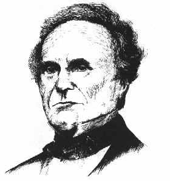

|
|
CHARLES BABBAGE 1792-1871
Penemu
Inggris Charles Babbage menyelesaikan prinsip-prinsip
pemakaian umum komputer digital seabad penuh sebelum
perkembangan besar-besaran mesin hitung elektronik terjadi.
Mesin yang dirancangnya, yang diberinya nama "mesin
analitis" pada pokoknya mampu melaksanakan apa saja yang
bisa dilakukan kalkulator modern (meski tidak sama cepatnya,
karena "mesin analis" bukanlah dirancang untuk bertenaga
listrik). Sayangnya, berhubung teknologi abad ke-19 belumlah
cukup maju, Babbage tidak sanggup merampungkan konstruksi
"mesin analis" itu, selain memang tidak bisa tidak
memerlukan waktu dan biaya besar. Sesudah matinya,
gagasannya yang begitu cemerlang nyaris dilupakan orang.
Tahun 1937, tulisan-tulisan Babbage menjadi perhatian
Howard H. Aiken, sarjana tamatan Harvard. Aiken yang juga
sedang mencoba menyelesaikan rancangan mesin komputer,
tergerak banyak oleh gagasan-gagasan Babbage. Bekerjasama
dengan IBM, Aiken sanggup membuat Mark I, komputer pertama
untuk segala keperluan. Tahun 1946, dua tahun sesudah Mark I
dioperasikan, kelompok insinyur dan penemu lain
menyelesaikan ENIAC, mesin hitung elektronik pertama. Sejak
saat itu, kemajuan teknologi komputer berkembang dengan
derasnya.
Karena mesin hitung punya pengaruh begitu besar di dunia,
malahan akan menjadi lebih penting lagi di masa-masa depan,
saya berniat memasukkan Charles Babbage dalam daftar urutan
pokok buku ini. Tetapi, sesudah mempertimbangkan dari segala
sudut, saya berkesimpulan bahwa sumbangan pikiran Babbage
terhadap perkembangan komputer tidaklah lebih besar
ketimbang Aiken atau ketimbang John Mauchly dan J.O. Eckert
(yang merupakan tokoh utama dalam perancangan ENIAC). Atas
dasar itu paling sedikit ada tiga pendahulu Babbage (Blaise
Pascal, Gottfried Leibniz dan Joseph Marie Jacquard) sudah
membuat sumbangan yang setara dengan Babbage. Pascal,
seorang matematikus, filosof dan ilmuwan Perancis menemukan
mesin penjumlahan mekanis bahkan jauh di tahun 1642. Di
tahun 1671 Gottfired Wilhelm Von Leibniz, seorang filosof
dan matematikus merancang mesin yang dapat menjumlah,
mengurangi, mengalikan dan membagi. Leibniz juga orang
pertama yang menunjukkan arti penting "sistem binary," yaitu
sistem penjumlahan dengan dua "digit" yang dalam jaman
modern ini secara luas digunakan dalam mesin komputer. Dan
orang Perancis lainnya, Jacquard, yang di awal abad ke-19
sudah menggunakan sistem pengisian komputer untuk mengawasi
alat tenun. Alat tenun Jacquard yang laku deras secara
komersial, punya pengaruh besar terhadap pemikiran Babbage.
Boleh jadi mempengaruhi juga Herman Hollerith, seorang
Amerika yang di penghujung abad ke-19 menggunakan sistem
pengisian komputer untuk membuat kolom-kolom data di Biro
Sensus.
Jasa terhadap pengembangan komputer modern karena itu
harus dibagi kepada beberapa orang, meski masing-masingnya
punya sumbangan penting tersendiri. Tetapi, tak satu pun
secara menyolok lebih menonjol dari lainnya. Baik Babbage
maupun lainnya tampaknya tak layak untuk dimasukkan dalam
bagian pokok dalam daftar urutan buku ini.
Situs Web
- http://src.doc.ic.ac.uk/media/visual/collections/funet-pics/jpeg/people/famous/CharlesBabbage-1847.jpg
- http://www.kerryr.net/pioneers/babbage.htm
- http://vmoc.museophile.org/babbage/
- http://ei.cs.vt.edu/~history/Babbage.html
|